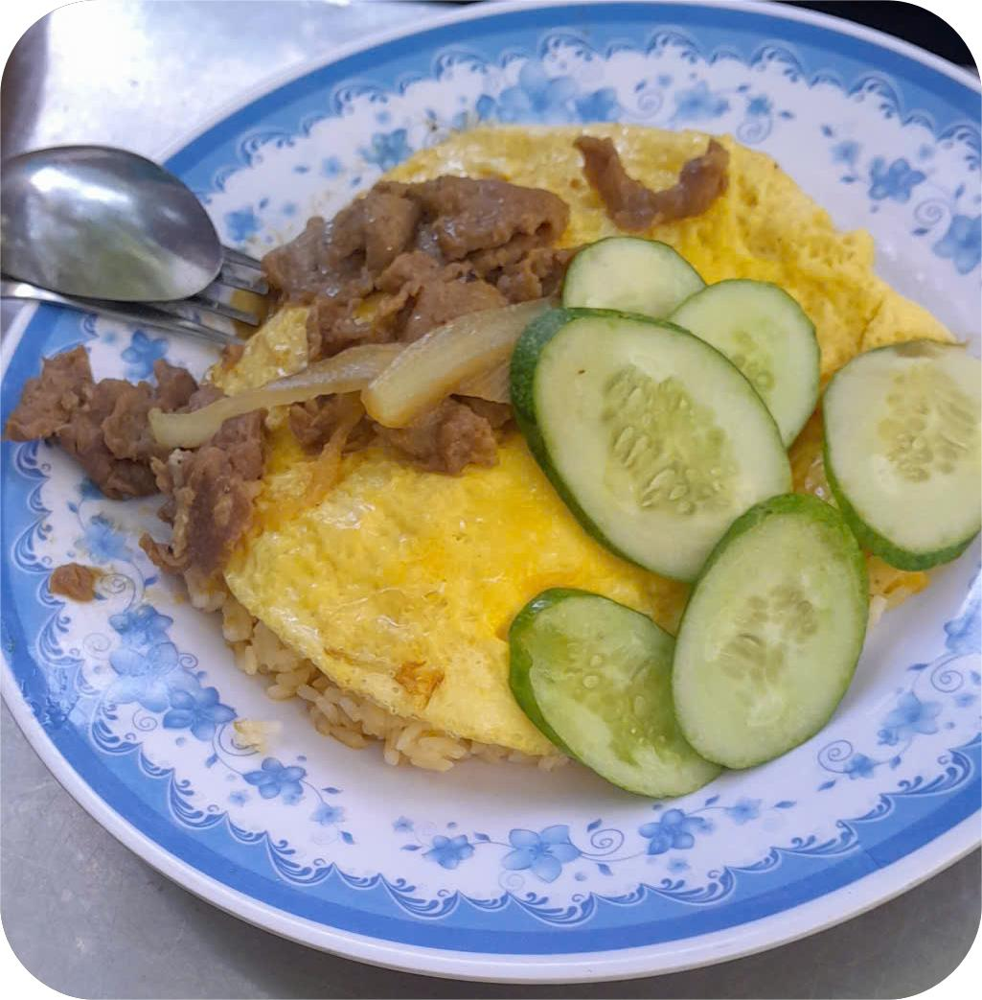
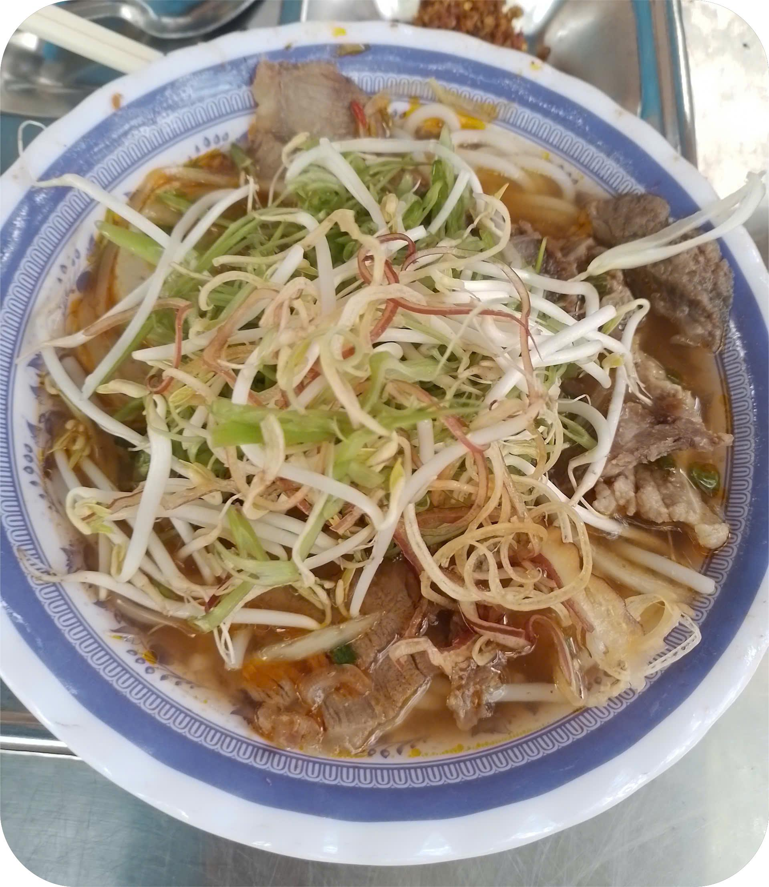
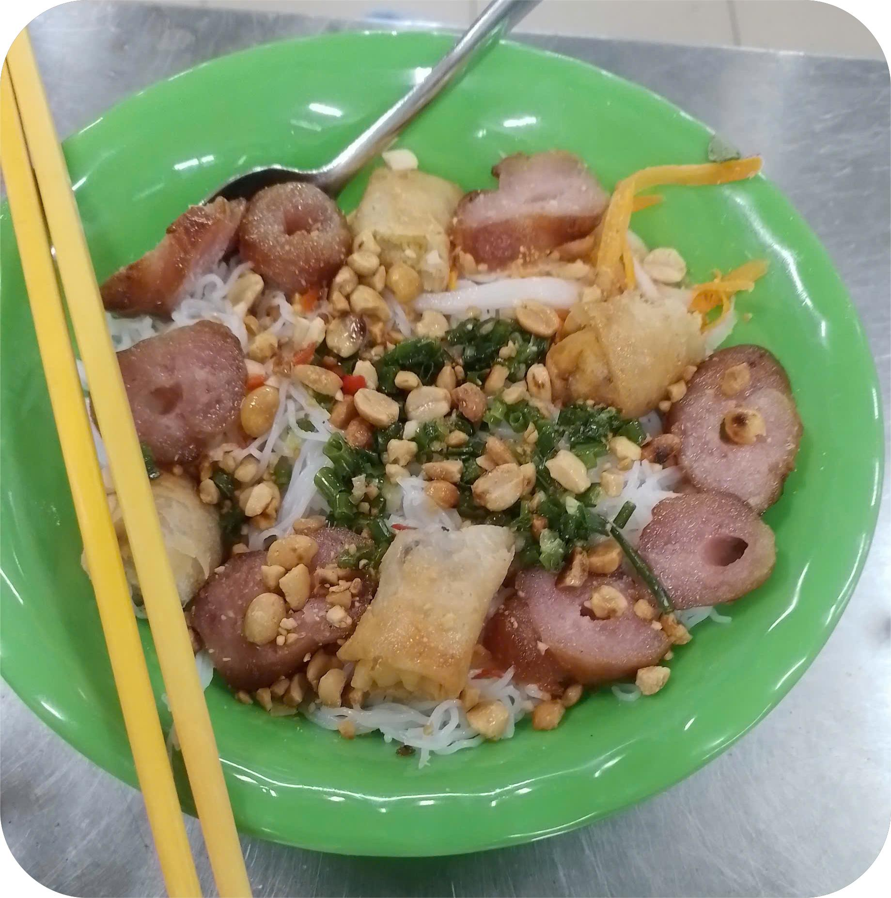
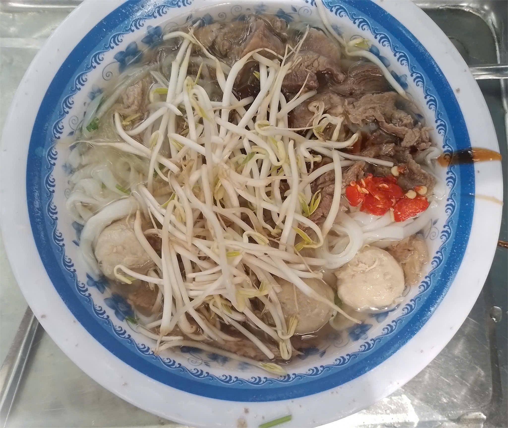
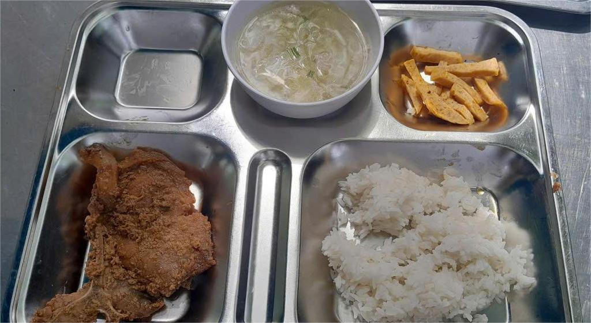

Cơm chiên bò trứng
Món ăn sáng phổ biến tại căn tin PTNK cs2, gồm cơm chiên thơm lừng, thịt bò mềm, trứng vàng óng và dưa leo tươi mát. Phù hợp cho học sinh cần bữa sáng nhanh, đủ chất.
Giá: 35.000 VNĐ
Bánh canh cua
Sợi bánh canh dai mềm kết hợp với nước dùng đậm đà từ cua tươi, thêm hành phi thơm lừng.
Giá: 40.000 VNĐ
Bún bò
Bún bò Huế chuẩn vị với nước lèo cay nhẹ, thịt bò mềm, chả và rau thơm đầy đủ.
Giá: 40.000 VNĐ
Bún thịt nướng
Thịt nướng thơm lừng ăn kèm bún, rau sống và nước mắm chua ngọt đặc trưng.
Giá: 35.000 VNĐ
Phở tái viên
Phở truyền thống với thịt bò tái và viên bò, nước dùng trong và ngọt thanh.
Giá: 35.000 VNĐ
Sườn cốt lết ram
Sườn ram mặn ngọt đậm đà, ăn kèm cơm trắng và dưa leo, rất đưa cơm.
Giá: 35.000 VNĐ